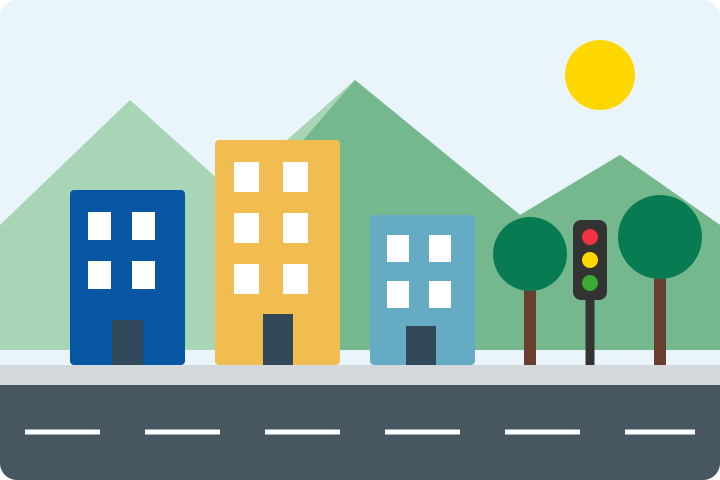

Participación ciudadana
Una Bogotá mejor comienza con nuestro barrio
Conoce cómo describir problemas en las vías y los espacios públicos de la ciudad.

¿Cómo funciona la idea del proyecto?
Cuatro pasos para conocer y documentar una incidencia.
-
01
Identifica
Reconoce un problema en una vía o espacio público.
-
02
Describe
Escribe qué sucede y dónde se encuentra el lugar.
-
03
Consulta
Explora los reportes de ejemplo organizados por categoría.
-
04
Revisa
Observa cómo se presentaría el seguimiento de un caso.
Esta práctica usa únicamente HTML y CSS. Los formularios no guardan ni envían información.
Categorías de reportes
Selecciona un tema para conocer sus ejemplos.
Nuestro compromiso con el ODS 11
Relacionamos el cuidado de las calles, la accesibilidad y la participación ciudadana con la idea de construir ciudades más inclusivas, seguras y sostenibles.
Conocer el proyecto